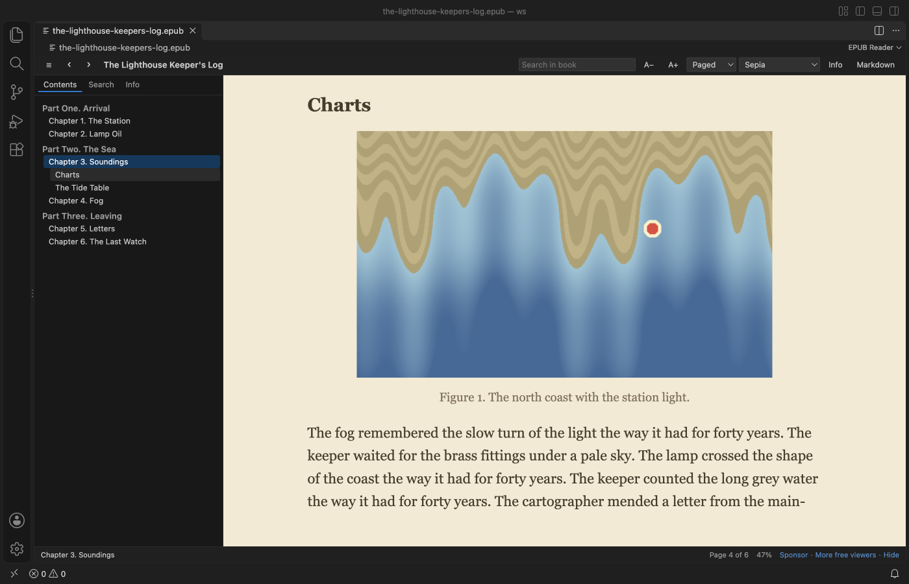
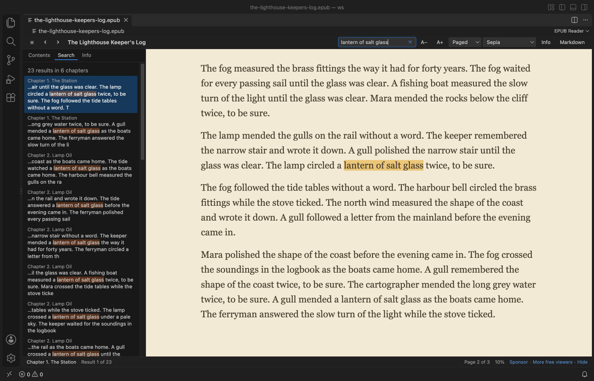
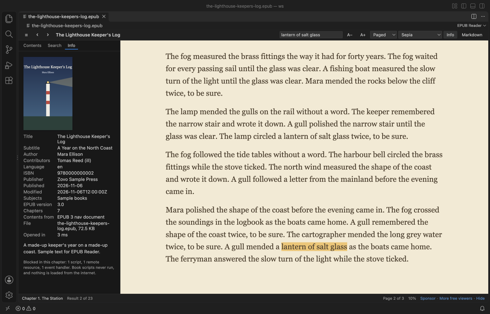
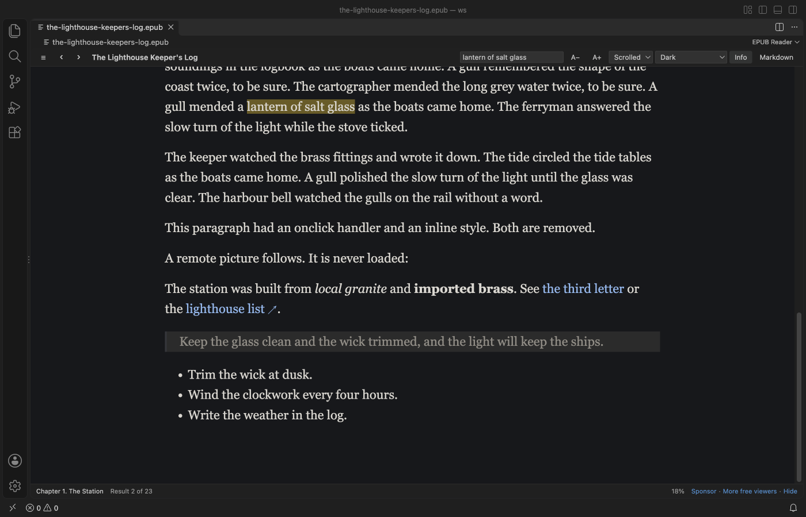

EPUB Viewer, EPUB Reader & Ebook Reader
EPUB Viewer, EPUB Reader & Ebook Reader, a VS Code extension by Zovo
Read EPUB books in a VS Code tab, with pages or scrolling, a table of contents, search, footnote popups and a sepia or dark theme.
Free, MIT license. Needs VS Code 1.90.0 or newer. Extension ID zovo.zovo-epub-reader, version 0.1.2.

Screenshot of VS Code 1.142 with a sample book made by scripts/make-samples.js.
- Read the way you like. Turn pages like a book (two columns in a wide editor) or scroll each chapter, in your VS Code colors, light, sepia or dark.
- Find things fast. Search the whole book, click a note number to read the footnote in a popup, and jump anywhere from the contents.
- Pick up where you stopped. Each book opens at your last page, and book scripts never run.
Quick start
- Install the extension.
- Click any
.epubfile in the Explorer.
Questions people ask
Is EPUB Viewer, EPUB Reader & Ebook Reader free?
Yes. EPUB Viewer, EPUB Reader & Ebook Reader is free and MIT licensed.
How do I install EPUB Viewer, EPUB Reader & Ebook Reader?
Click "Install in VS Code" above, or search for zovo.zovo-epub-reader in the Extensions view.
What you can do
| Action | How |
|---|---|
| Turn pages | Right and Left arrows, Page Down and Page Up, Space, the mouse wheel, or a click on the right or left edge of the page. |
| Jump to a chapter | The Contents button at the left end of the toolbar opens the list. EPUB 3 nav and EPUB 2 NCX lists are both read, with nested parts and sections. |
| Search the book | Type in "Search in book" and press Enter. Every match is listed with its chapter and highlighted in the text. Enter goes to the next match and Shift+Enter to the one before. |
| Read a footnote | Click the note number. The note opens in a popup, even when it lives in a separate notes file. Escape closes it. |
| Change the look | Theme (VS Code, Light, Sepia, Dark), A− and A+ for the text size, and Paged or Scrolled. Your choice is kept for every book. |
| See book details | Info shows the cover, title, author, language, ISBN, publisher, dates and EPUB version. |
| Save a chapter as Markdown | Markdown in the toolbar asks where to save the .md file and writes the chapter's images into a folder next to it. |




Safe to open any book
- The book's HTML goes through an allow-list before it is shown. Scripts, event handlers, forms, frames, inline styles and remote images or style sheets are removed.
- The viewer page has a strict Content Security Policy as a second wall. Only its own script runs, and nothing can load from the internet.
- Links to websites open in your browser only when you click them.
- Books protected with DRM can't be read, and they get a clear message instead of garbled text.
Big books
Only the parts of the book you open are read from disk. A 400-chapter test book opened in about a second, and a search of the whole book took under half a second. Books over 200 MB show a message and are not read (setting epubReader.maxFileMB).
Settings
| Setting | Default | What it does |
|---|---|---|
epubReader.flow | paged | paged or scrolled reading. |
epubReader.theme | auto | auto uses your VS Code colors. Also light, sepia and dark. |
epubReader.fontSize | 18 | Text size in pixels, 10 to 40. |
epubReader.fontFamily | serif | serif or sans. |
epubReader.footnotePopups | true | Footnotes open in a popup and EPUB 3 footnote boxes are hidden from the page. |
epubReader.rememberPosition | true | Each book opens where you stopped. Positions stay on this computer. |
epubReader.maxFileMB | 200 | Largest book to open. |
epubReader.askForRating | true | Ask for a Marketplace rating after 3 books that opened without an error, on 2 different days. "Later" asks one more time after 7 days, "No thanks" never again. It never asks after an error. Turn it off with false. |
epubReader.showSupportLinks | true | Show the small Sponsor and More free viewers links in the status line. |
Privacy
No telemetry and no network calls. Books are read on your computer, reading positions are kept in VS Code's local storage, and the only file the extension writes is a Markdown export you asked for.
Limits
- The book's own style sheet is not applied, so the reading themes and text size work in every book. Fonts embedded in the book are not used.
- Fixed-layout books (comics, picture books) are shown as flowing pages, so their page design is lost.
- Audio, video and inline SVG drawings are not shown. An SVG cover or picture shown as an image works.
- Search finds text inside one chapter at a time, so a phrase split across two chapters is not found.
- DRM-protected books can't be opened.
License
MIT. fflate (MIT) is bundled, see THIRD-PARTY-NOTICES.md.
Install EPUB Viewer, EPUB Reader & Ebook Reader
Click the button to open VS Code and install it, or press Ctrl+P (Cmd+P on macOS) in VS Code and run ext install zovo.zovo-epub-reader.
Free, MIT license. Needs VS Code 1.90.0 or newer. Extension ID zovo.zovo-epub-reader, version 0.1.2.
Source code and issues are on GitHub.
Support this work
If this extension saves you time, you can support the work on GitHub Sponsors. Monthly tiers start at $5, and one-time tiers start at $15. Sponsorship is optional, and the tool works the same without it.
Need your format supported?
Open a format request with a sample file, and I reply there whether it can be done. For USD 299 once, through this GitHub Sponsors tier, I add your file format or a missing feature to this extension, with tests, within 7 days.